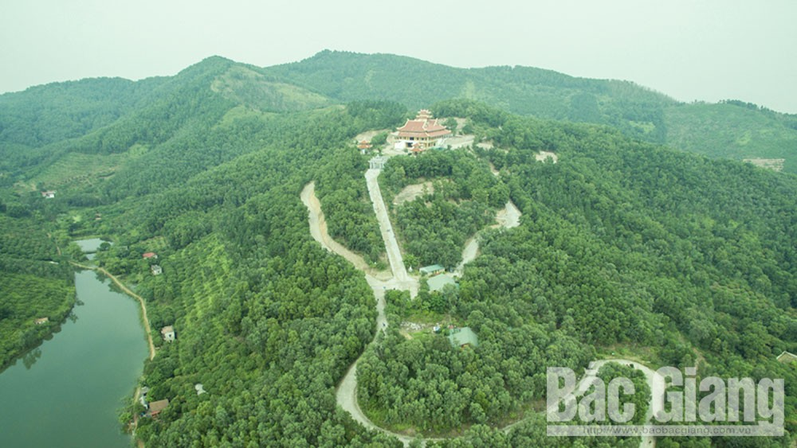

Thiền viện Trúc lâm Phượng Hoàng-điểm nhấn du lịch văn hóa tâm linh
Thiền viện Trúc lâm Phượng Hoàng được xây dựng từ chân lên lưng chừng của ngọn núi Non Vua. Đây là đỉnh cao nhất trong dãy Nham Biền. Đỉnh ngọn Non Vua có Giếng trời, còn được gọi là Thiên huyệt, quanh năm có nước sạch trong mát.

Dưới chân núi Non Vua là khe Hang Dầu được biết đến là nơi quy tụ Nguyệt Nham của 9 ngọn núi Phượng,
nguồn nước dồi dào, thảm thực vật đa dạng. Theo quy hoạch, thời gian tới khe Hang Dầu sẽ được đầu tư
thành khu vui chơi giải trí kết hợp biệt thự nghỉ dưỡng.
Vị trí xây dựng Thiền viện thuộc thôn Minh Phượng, xã Nham Sơn, cách trung tâm huyện 2 km và cách
TP Bắc Giang khoảng 10 km. Tổng diện tích quy hoạch xây dựng hơn 18 ha gồm các hạng mục: Cổng tam quan;
lầu chuông, lầu trống; Tòa điện chính; nhà tổ, nhà khách; nhà trưng bày; thiền đường, trai đường,
thư quán… Các hạng mục được thiết kế hài hòa với kiến trúc đẹp, uy nghi, bảo đảm cảnh quan môi trường
và đặc biệt là bảo đảm sự tôn nghiêm, phù hợp định hướng phát triển KT-XH.
Từ những yếu tố đó, Thiền viện là công trình có vị trí đặc biệt quan trọng đối với huyện Yên Dũng,
là điểm đến lý tưởng của du khách trong nước và quốc tế. Đồng chí Nguyễn Viết Tuấn, Bí thư Huyện ủy
Yên Dũng chia sẻ: Việc xây dựng Thiền viện Trúc lâm Phượng Hoàng tạo thêm cảnh quan sinh thái,
đáp ứng nhu cầu sinh hoạt văn hóa tâm linh, tín ngưỡng của nhân dân, góp phần tạo bước đột phá
về phát triển du lịch của huyện.
Cùng đó là nơi lưu giữ, phát huy giá trị văn hóa đạo đức của tiền nhân, tiếp nối tư tưởng dòng thiền Trúc lâm. Đặc biệt, đây là công trình kết nối du khách với hệ thống các điểm du lịch văn hóa tâm linh lớn trong vùng như: Đền Kiếp Bạc, chùa Vĩnh Nghiêm, non thiêng Yên Tử, chùa Kem, xã Nham Sơn (nằm trong hệ thống di tích quốc gia đặc biệt cuộc khởi nghĩa Yên Thế)…
Điểm đến tâm linh
Có mặt tại công trình trước thời điểm khánh thành Chính điện, có thể thấy không khí làm việc khẩn trương. Các tốp thợ dồn sức đổ bê tông cho khoảng sân phía trước Chính điện. Bên trong, nhiều người tất bật chỉnh trang các bức phù điêu, hệ thống cửa gỗ...

Thời gian qua, Thiền viện đã đón hàng nghìn lượt du khách đến tu học, tham quan, chiêm bái, nhất là vào các dịp lễ Phật đản, lễ Vu lan, ngày lễ, tết khác trong năm. Bà Ngô Thị Tuyết, phường Ngô Quyền (TP Bắc Giang) chia sẻ: Tôi thường xuyên đến Thiền viện vào ngày Chủ nhật tuần cuối tháng để theo khóa tu học và tham gia vào các hoạt động ở Thiền viện. Đây thực sự là điểm đến hấp dẫn đối với nhiều người”. Qua chia sẻ của bà Tuyết và quan sát thực tế Thiền viện có thể thấy sức hút và tiềm năng du lịch tâm linh, tín ngưỡng rất lớn ở nơi đây.